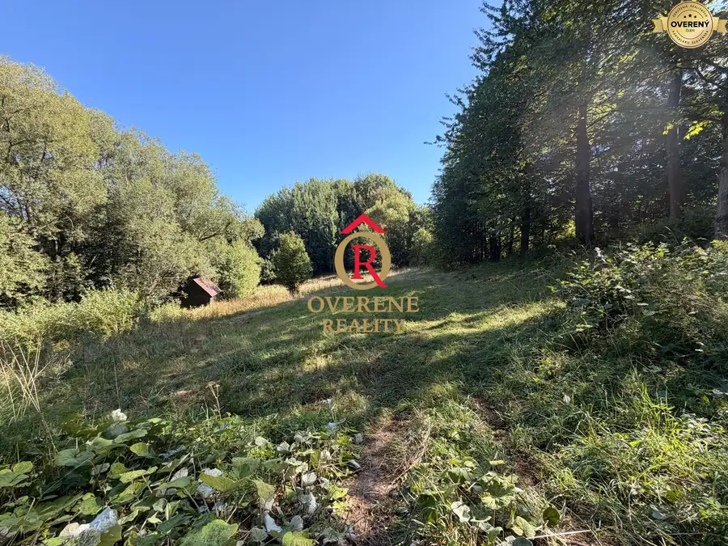
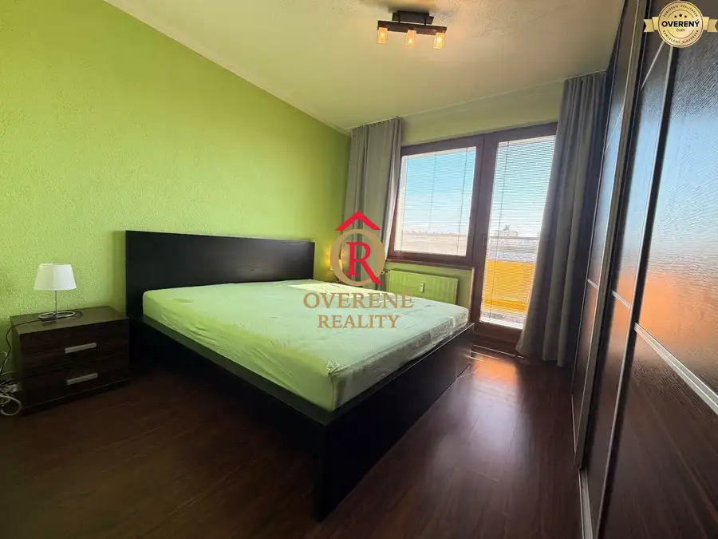
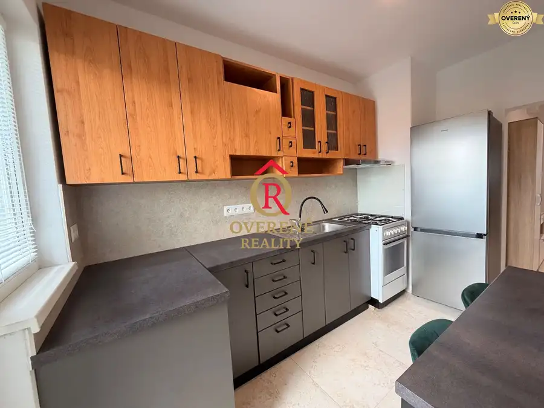

Kompletne zrekonštruovaný 3-izbový byt s lodžiou a krásnym výhľadom
Banská Bystrica
- Dispozícia3-izbový
- Plocha68 m²
- Poschodie4. z 9
- Stavúplne prerobený
- Vlastníctvoosobné
O nehnuteľnosti
Ponúkame na predaj štýlový, kompletne zrekonštruovaný a kompletne zariadený 3-izbový byt typu Bauring na vyhľadávanej Tulskej ulici v obľúbenej mestskej časti Fončorda v Banskej Bystrici.
Byt s podlahovou plochou 68 m² sa nachádza na 4. poschodí zrekonštruovaného 9-poschodového bytového domu s moderným výťahom. Vďaka praktickej dispozícii, svetlému interiéru a príjemnej orientácii pôsobí byt veľmi vzdušne, priestranne a útulne.
Najväčšou výhodou je, že sa predáva kompletne zariadený tak, ako je na fotografiách – nový majiteľ si tak nemusí plánovať rekonštrukciu ani zariaďovanie. Stačí si priniesť osobné veci a môžete bývať.
DISPOZÍCIA
Byt ponúka praktické rozdelenie dennej a nočnej časti:
* vstupná chodba s veľkým kumbálom, ktorý môže slúžiť ako šatník, sklad alebo menšia pracovňa,
* svetlá a priestranná obývacia izba s výstupom na lodžiu,
* samostatná kuchyňa s krásnym výhľadom,
* dve nepriechodné spálne,
* vstavané rolldor skrine v oboch spálňach,
* kúpeľňa s veľkým oknom a vaňou,
* samostatné WC s umývadlom,
* pivnica.
Veľkou výhodou je samostatná kúpeľňa a WC, ale aj veľkorysý úložný priestor. Kumbál na chodbe navyše ponúka zaujímavý potenciál – pri vhodnej úprave ho možno využiť aj na vytvorenie ďalšej izby, a byt tak prispôsobiť na 4-izbové bývanie.
REKONŠTRUKCIA A VYBAVENIE
Byt prešiel kompletnou rekonštrukciou, v rámci ktorej bola zrealizovaná nová elektroinštalácia, rozvody vody a odpadu, stierky, maľovky, podlahy, interiérové dvere, plastové okná so žalúziami, bezpečnostné vstupné dvere Sherlock a kompletná rekonštrukcia kúpeľne a WC.
Dominantou interiéru sú moderné napínacie stropy s integrovaným LED osvetlením, ktoré dodávajú priestoru elegantný a nadčasový vzhľad.
Kuchynská linka je vyrobená na mieru a vybavená vstavanými spotrebičmi – elektrická varná doska, rúra, umývačka riadu, chladnička s mrazničkou a digestor.
Byt sa predáva kompletne zariadený tak, ako ho vidíte na fotografiách.
Plyn je momentálne odpojený, pričom jeho opätovné pripojenie je možné.
LODŽIA A VÝHĽAD
Veľká presklená lodžia s výmerou približne 4 m² je orientovaná na západ a ponúka príjemný výhľad do okolia.
Je ideálnym miestom na rannú či popoludňajšiu kávu, posedenie s rodinou alebo využitie krásnych večerov pri západe slnka. Z lodžie je zároveň výhľad na detské ihrisko, čo ocenia najmä rodiny s deťmi.
LOKALITA
Tulská ulica ponúka príjemné bývanie v lokalite s množstvom zelene a kompletnou občianskou vybavenosťou.
V bezprostrednej blízkosti sa nachádza škola, materská škola, obchody, služby, detské ihriská aj možnosti na prechádzky. Škola a škôlka sú prakticky pod oknami bytového domu, takže každodenné fungovanie rodiny je maximálne komfortné.
BYTOVÝ DOM A ĎALŠIE INFORMÁCIE
Bytový dom je zateplený, má moderný výťah, nové stúpačkové rozvody a vstup zabezpečený čipovým systémom. Byt je v správe Stavebného bytového družstva Banská Bystrica.
K bytu prislúcha pivnica.
Parkovacie miesto pred bytovým domom je aktuálne zaplatené do konca roka 2026 s možnosťou predĺženia.
Mesačné náklady na bývanie predstavujú približne 150€ pre 2 osoby vrátane energií.
HLAVNÉ VÝHODY
* kompletná rekonštrukcia,
* kompletne zariadený byt bez potreby ďalších investícií,
* 68 m²,
* svetlý a vzdušný interiér,
* veľká presklená lodžia,
* krásny výhľad,
* 2 nepriechodné spálne,
* rolldor skrine v oboch spálňach,
* veľký kumbál s možnosťou ďalšieho využitia,
* potenciál vytvorenia 4-izbového bývania,
* kúpeľňa s oknom,
* samostatné WC,
* pivnica,
* parkovacie miesto,
* škola a škôlka v bezprostrednej blízkosti,
* kompletná občianska vybavenosť.
Byt, ktorý je pripravený na nový začiatok. Žiadna rekonštrukcia, žiadne zariaďovanie – všetko podstatné je už hotové. Stačí si priniesť osobné veci a môžete bývať.
Pre viac informácií a dohodnutie obhliadky nás kontaktujte na telefónnom čísle alebo e-mailom na
V cene nehnuteľnosti je už zahrnutý kompletný právny servis, vypracovanie zmlúv aj všetky poplatky spojené s prevodom vlastníckych práv.
OVERENÉ REALITY – garancia bezpečného a seriózneho obchodu.
Parametre
| Celková rozloha | 68 m² |
|---|---|
| Poschodie | 4/vyššie poschodie |
| Počet poschodí | 9 |
| Počet izieb | 3 |
| Vlastníctvo | osobné |
| Stav | úplne prerobený |
| Odvoz odpadu | áno - separovaný |
| Plyn | áno |
| Internet | optika |
| Kúpeľňa | vaňa |
| Vykurovanie | spoločné |
| Lódžia | áno - 1 |
| Pivnica | áno |
| Výťah | áno |
| Parkovanie | vlastné vyhradené |
| Postavené z | panel |
| Zariadenie | zariadený |
| Zateplený objekt | áno |
| Energetický certifikát | áno |
| Okná | plastové |
| Orientácia | západná |
| Dátum zverejnenia | 28. 8. 2026 |
Kde to je
Mohlo by Vás zaujímať

Pozemok8 80 000 €Vysnívané bývanie v prírode – stavebný pozemok 1 009 m², Králiky Králiky 1009 m² Parcela registra C-KN, druh pozemku: ostatná plocha Podľa územnoplánovacej informácie je na pozemku povolená výstavba rodinného domu. V obci je…
Byt10 191 000 €NOVINKA!!! Priestranný 3-izbový byt, 72 m² | Karpatská, Sásová Banská Bystrica 3-izbový72.12 m²8. podlažie Ponúkam na predaj priestranný a vkusne zariadený 3-izbový byt na obľúbenej ulici Karpatská v Sásovej. Byt má úžitkovú plochu 72 m² a nachádza sa na…
BytRezervované9 Cena dohodouNa prenájom krásny 2-izbový byt v Sásovej – Starohorská Banská Bystrica 2-izbový50 m²2. podlažie V exkluzívnom zastúpení klienta ponúkame na prenájom krásny, svetlý a priestranný 2-izbový byt s výmerou 50 m² na Starohorskej ulici v Banskej…